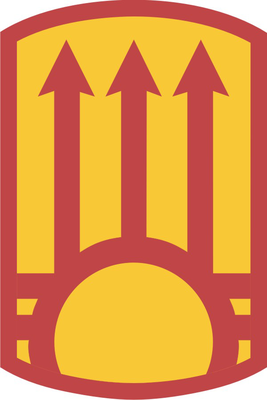
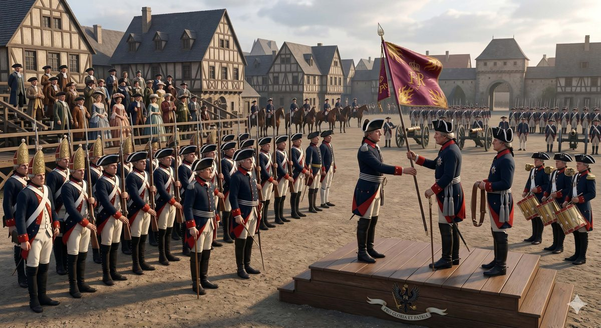
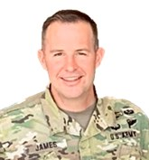
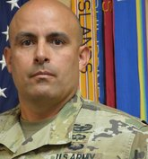

PROGRAM
Change of Command Ceremony
Schedule
- Opening Narration
- Arrival of Official Party
- National Anthem
- Invocation
- Presentation of Flowers
- Change of Command
- Remarks
- Benediction
- Army Song
- Closing Narration
- Reception
History of the Change of Command

Origin of the Tradition
The change of command ceremony is one of the oldest and most enduring traditions in military history, with roots reaching back to the 18th century. During this era, organizational flags were developed with color arrangements and symbols unique to each unit. The flag served as a rallying point on the battlefield and a constant reminder of a soldier’s allegiance to the unit and its commander. To this flag—and to the officer entrusted with it—soldiers dedicated their loyalty and trust.
The Passing of the Colors
When command of a unit changed hands, the flag was passed from the outgoing commander to the incoming commander in the presence of the entire formation, so that every soldier could witness the transfer with their own eyes. Today that same act remains the centerpiece of the ceremony. The colors are passed in a deliberate sequence: the outgoing commander relinquishes them to the higher commander, signifying the return of authority; the higher commander entrusts them to the incoming commander; and the incoming commander returns them to the Color Sergeant, who safeguards them on behalf of the unit.
A Tradition Unbroken
Though uniforms, weapons, and missions have changed across more than two centuries, this ceremony has remained largely unchanged; a powerful reminder that while individual commanders come and go, the unit endures, bound together by its colors, its lineage, and its enduring commitment to the Nation.
The 111th Sustainment Brigade
The 111th Sustainment Brigade of the New Mexico Army National Guard, headquartered at Rio Rancho, traces its organizational heritage to May 2, 1922, when New Mexico Guardsmen were organized as the 111th Cavalry Regiment. Through the decades the unit has been redesignated to meet the changing needs of the Army. The brigade’s soldiers have answered the call in deployments to Guantanamo Bay and Kosovo; in relief operations in Puerto Rico after Hurricane Maria; and in the COVID-19 response across New Mexico, the Pueblos, and the Navajo Nation. Today’s passing of the colors continues a lineage of service that spans more than a century.
Outgoing Commander

ColonelEric Weston James
Outgoing Commander
Biography
COL Eric W. James began his Army career in 1996 as a Private First Class assigned to the 1450th Transportation Company of the North Carolina National Guard. He has a mix of National Guard, Army Reserve and Active Duty service. He has held developmental positions as Gold Bar Recruiter, Platoon Leader, Company Executive Officer, and Company Commander. He completed broadening assignments as Officer Candidate School Cadre, Combat Advisor, and Recruit Sustainment Program Commander. At the Battalion level he has served as S3, Executive Officer and Commander. At Brigade level COL James held positions as Area Operations Officer, Adjutant and Deputy Commander. He has held two assignments at the JFHQ level, one assignment within the G3 and the other as Counterdrug Coordinator for the New Mexico Joint Counterdrug Task Force. COL James currently serves as the Commander for the 111th Sustainment Brigade in Rio Rancho, New Mexico.
COL James has deployed as a Combat Advisor to both Operation Iraqi Freedom (MiTT) and Operation Enduring Freedom (OMLT) and mobilized in support of JTF Buccaneer, Hurricane Maria Response and Relief Operations in Puerto Rico and State Active Duty emergencies.
COL James earned a Bachelor of Science, from Appalachian State University and a Master of Business Administration from Augsburg University. He is a graduate of the Command and General Staff College and the US Army War College.
COL James’ awards and badges include Bronze Star Medal, Meritorious Service Medal, Army Accommodation Medal, Army Achievement Medal, Ranger Tab, the Combat Infantry and Expert Infantry Badges, the Basic Parachutists, Air Assault and Pathfinder Badges, the German Army Schützenschnur (Gold) and German Armed Forces Badge for Military Proficiency (Gold).
COL James has been married to his wife Jill for 27 years. They have two school-age children. The family resides in Albuquerque, New Mexico.
Incoming Commander

ColonelRudylee Daniel Armijo
Incoming Commander
Biography
COL Rudylee Daniel Armijo was commissioned in May of 2002 from New Mexico Military Institute. He completed his Bachelor of Science in Civil Engineering at the University of New Mexico in 2005 and his Master of Business Administration in Project Management from Ashford University in 2013. He is a graduate from the United States Army War College and received his Master of Strategic Studies degree in 2024. COL Armijo attended the Engineer Basic Officer Course in August 2005, Civil Support Skills Course in January 2011, Chemical Captains Career Course in July 2011, Support Operations Course 2014, Command and Staff General College (Intermediate Level Education) in 2013, Command and Staff General College Advance Operations Course in 2014.
COL Armijo has served with the New Mexico Army National Guard since 2001, starting as a Simultaneous Membership Program (SMP) cadet, serving in roles from Maintenance Company Platoon Leader 3631st Maintenance Co, Company Executive Officer 3631st Maintenance Co, 920th Engineer Company Commander from 2006 to 2010. COL Armijo deployed from May 2009 to May 2010 where he commanded the 920th Engineer Company in support of Operation Enduring Freedom in various areas throughout Regional Command East Afghanistan. COL Armijo was assigned to the 515th Regional Training Institute (RTI) where he served as an Officer Candidate School (OCS) TAC Officer in 2010. In November 2010 he was assigned as the Survey Team Leader for the 64th Civil Support Team. He returned to the 515th RTI in 2013 as the Regimental Logistics Officer. In September 2014 he was assigned to the 515th Combat Sustainment Support Battalion (CSSB) in Belen, NM where he served as the Battalion Executive Officer and Administrative Officer. In May 2016 COL Armijo was assigned to the 111th Special Troops Battalion (STB) as the Battalion Executive Officer and Administrative Officer. In August of 2017, COL Armijo was selected to serve at the 111th Sustainment Brigade as the Brigade S3 Operations Officer in Rio Rancho, NM. In February 2019 COL Armijo was assigned to the New Mexico Army National Guard Recruiting and Retention Battalion as the Executive Officer and Recruit Sustainment Program Commander. COL Armijo assumed command of the Recruiting and Retention Battalion in 2020 where he served in command for two years. In February 2022 he returned to the 111th Sustainment Brigade as the Support Operations Officer and Executive Officer. He was selected to be the Deputy Chief of Staff, Logistics (G4) for the New Mexico Army National Guard in April 2024.
COL Armijo has been awarded the Bronze Star Medal, Meritorious Service Medal (4 Oak Leafs), Army Accommodation Medal (4 Oak Leafs), Army Achievement Medal, Overseas Service Ribbon, Afghanistan Campaign Medal w/ Bronze Service Star, Global War On Terrorism Service Medal, National Defense Service Ribbon, Armed Forces Reserve Medal with M Device and Bronze Hourglass, Basic Parachutist Badge, Air Assault Badge, and the Combat Action Badge.
COL Armijo is currently married to the former Aysha Meyers, Castel Rock, CO. They have three children, Wyatt (17), Urijah (17), and Isabella (8). They reside in Los Lunas, NM.